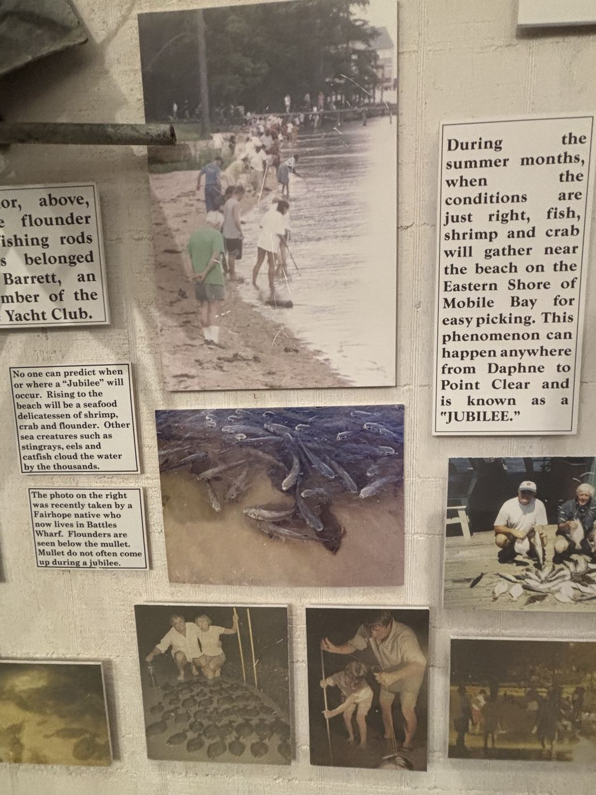
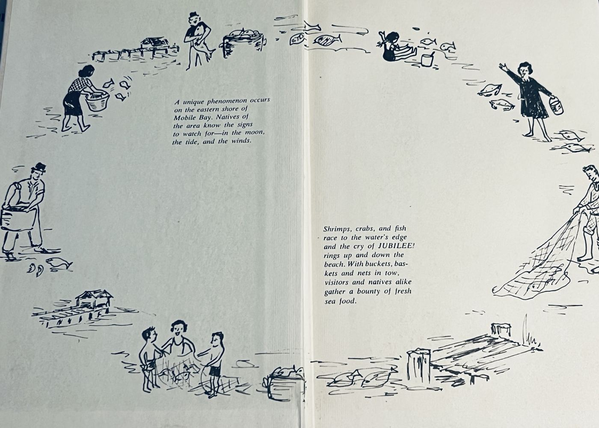
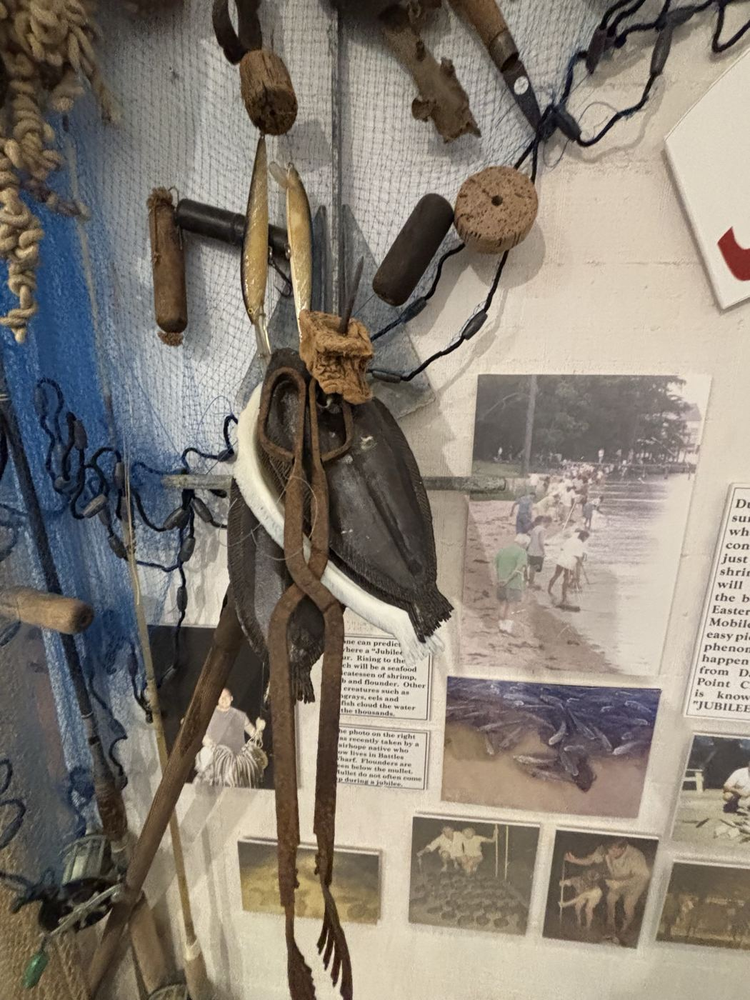
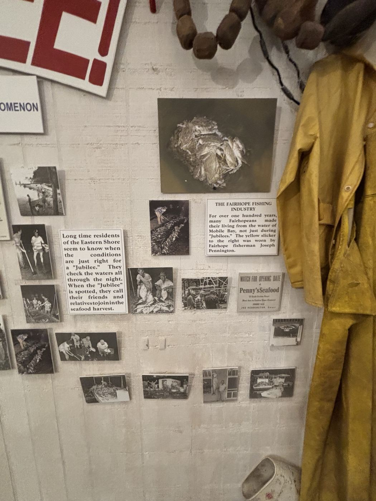
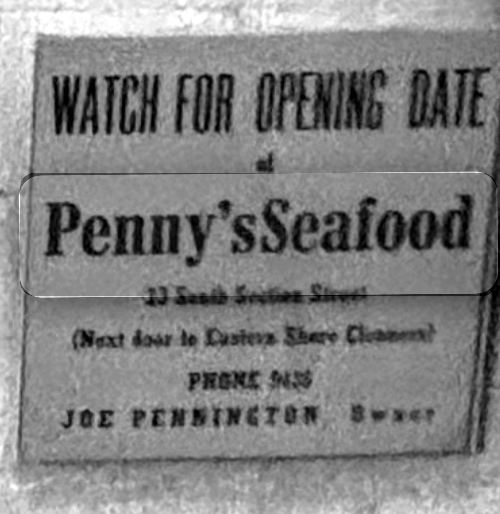
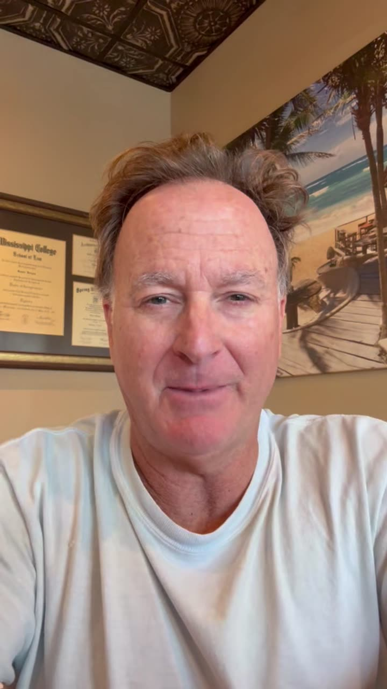
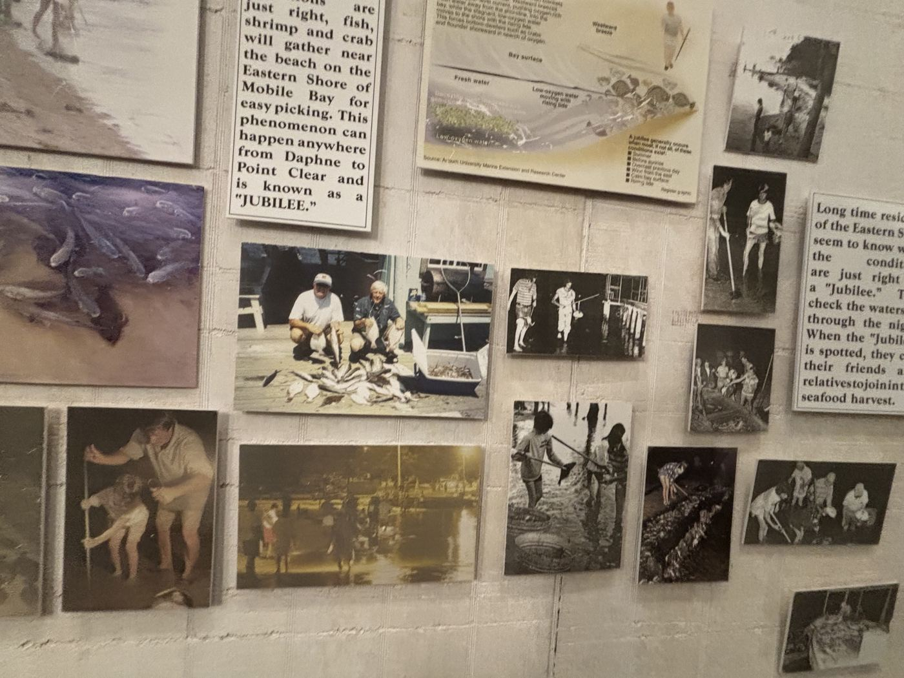

The Midnight Call
A jubilee usually starts in the dark, a few hours before sunrise. Someone walking the beach sees flounder lying flat in a few inches of water and crabs crawling up the pilings. They shout the word, and phones start ringing up and down the shore.
Within minutes, families are wading in with gigs, nets and washtubs. The fish are sluggish and easy to catch. By sunrise the water clears up and whatever is left swims back to deep water.
"No one can predict when or where a 'Jubilee' will occur. Rising to the beach will be a seafood delicatessen of shrimp, crab and flounder. Other sea creatures such as stingrays, eels and catfish cloud the water by the thousands."
Exhibit panel, Fairhope Museum of History
"This phenomenon can happen anywhere from Daphne to Point Clear and is known as a 'JUBILEE.'"
Exhibit panel, Fairhope Museum of History

A Century of Watching the Water
People on the Eastern Shore were catching jubilees long before anyone could explain them. A Mobile newspaper wrote about one in 1867 and described it as something that happened every year.
Nobody had the science yet, so families learned the signs and passed them down. By 1964 the jubilee was so much a part of local life that the Junior League of Mobile named its cookbook Recipe Jubilee!
"Natives of the area know the signs to watch for—in the moon, the tide, and the winds."
Recipe Jubilee!, Junior League of Mobile, 1964

- 1867The Mobile Daily Register reports a jubilee and calls it a yearly event.
- 1912The word "jubilee" first shows up in print for this event. Who first named it is unknown.
- 1946–1956Harold Loesch collects records of 37 jubilees, from newspapers, interviews with fishermen and his own measurements.
- 1960Loesch publishes the cause: the water near the bottom runs out of oxygen.
- 1964The Junior League of Mobile publishes Recipe Jubilee!
- About 1969James Dorgan, interviewed for this exhibit, begins 57 years on the Eastern Shore.
- 1973Edwin May's larger study confirms Loesch's explanation.
- TodayDaphne calls itself the Jubilee City and holds a Jubilee Festival every September.
| What locals watched for | What scientists list |
|---|---|
| "Late August" (Dorgan) | Summer. In Loesch's records, 21 of 37 jubilees came in August. |
| "The winds" (cookbook); "an easterly breeze" (Dorgan) | Wind from the east |
| Checking "the waters all through the night" (museum) | Before sunrise |
| "It follows heavy rains" (Dorgan) | A layer of fresh river water on top of the bay |
| "The tide" (cookbook); "low tide" (Dorgan) | A rising tide. This is the one place memory and science disagree. |
| — | Overcast the day before; a calm bay surface |
Left column: Recipe Jubilee! (1964), the museum exhibit and the James Dorgan interview. Right column: the Auburn University Marine Extension and Research Center diagram in the exhibit, and Loesch (1960). Most of the old signs match the science.
Why the Fish Come In
A jubilee happens when the water near the bottom of the bay runs out of oxygen and the wind and tide push that water up against the beach. Fish and crabs move ahead of it until they are pinned at the shoreline.
"The fresh water mixes with the salt water and creates this area of water with depleted oxygen, and this wall of water moves in waves towards the beach.… It may only last about 20 minutes."
James Dorgan, interview, 1:06
Dorgan's "wall of water" matches what scientists found. His idea that the fresh and salt water mix is the same explanation locals gave before 1960. The research shows the opposite: the two layers stay separate, and that's why the bottom water runs out of oxygen. The old explanation is still part of how people tell the story.
The water layers
In summer, lighter fresh river water floats on top of heavier salt water from the Gulf. The two layers don't mix.
The bottom runs out of air
Dead plants and algae sink and rot on the bottom. Bacteria use up the oxygen in the bottom layer.
Wind and tide push it in
An east wind blows the surface water away from the Eastern Shore. The rising tide carries the low-oxygen water toward the beach.
Trapped at the edge
Flounder, crabs and shrimp move ahead of the bad water until they reach the shallows. When the wind shifts or the sun comes up, the water mixes and they swim back out.
Tools of the Harvest
Fairhope families made their living from Mobile Bay for more than a hundred years, not only during jubilees. These objects in the museum belonged to local people.

Anchor, homemade flounder gig, rods and reels
Belonged to Bill Barrett, an early member of the Fairhope Yacht Club. A gig is a pronged spear for spearing flounder in shallow water.

Yellow fisherman's slicker
Worn by Fairhope fisherman Joseph Pennington.

"Watch for opening date: Penny's Seafood"
23 South Section Street, Fairhope, "next door to Eastern Shore Cleaners." Joe Pennington, owner. Date unknown.
Voices from the Shore

Watch the interview · 3 minJames Dorgan is a lifelong Fairhope resident who has spent 57 years on the Eastern Shore. Some of his earliest memories are jubilees at his family's bay house at Mullet Point, on County Road 1 south of the Grand Hotel. The house had roll-up windows, bunk beds, concrete floors and a wharf out front.
"In the middle of the night, we would hear something outside and hear voices and look out into the bay. And there were neighbors with big spotlights and gigs and fishing nets and buckets.… Then you'd hear in the distance, somebody would yell, 'Jubilee!' and all the neighbors' lights up and down the coast would come on and people would come out in their pajamas."
James Dorgan · 0:36"You'd go out and catch as many flounder as you can and have flounder for the rest of the summer. Or you'd catch crab and make crab dip."
James Dorgan · 2:27"In that mix there are sand sharks and there's jellyfish and there's stingrays that you could step on. One of those occasions, my aunt stepped on a stingray and we had to send her to the hospital.… It is a little bit chaotic and it's crazy."
James Dorgan · 2:35"The conditions of a jubilee are typically late August, with an easterly breeze, low tide, and it follows heavy rains."
James Dorgan · 2:57
Is Mobile Bay the Only One?
Local stories often say Mobile Bay is one of only two places in the world with jubilees. James Dorgan says it too: "a unique occurrence that happens only in Mobile Bay on the eastern shore, as well as one place in Japan." The other one people name is Tokyo Bay in Japan, where wind blowing off the land can pull low-oxygen bottom water up to the shore. The Japanese call it aoshio, or "blue tide."
The cause is similar, but the result is different. In Tokyo Bay the water turns milky blue and the fish and clams mostly die. Mobile Bay is the only place where jubilees are recorded as a regular event that people go out to harvest.
Why It Still Matters
For about 100 years, people on the Eastern Shore knew how to predict a Jubilee before scientists figured out what caused it. They passed down what they knew through family traditions and a legacy of watching the bay and recognizing the signs, like an east wind and late-summer weather. They got a lot right, even though some details, like the role of the tide, were not completely understood.
My favorite part of James Dorgan’s interview was when he talked about hearing someone yell “Jubilee!” in the middle of the night and seeing neighbors come outside in their pajamas to head down to the water. It shows how a natural event became a tradition that brought the whole community together.
I have only seen the very end of a Jubilee a few years ago, but I think it is pretty amazing that something this unique happens right here where we live. A Jubilee is more than just a natural event. It is part of the history and traditions that make the Eastern Shore special, and it can be passed down for generations to come. I love to fish, so I hope to experience a Jubilee for myself one day. After all, living on the Eastern Shore means we have the chance to witness something that is a real “shore thing!”
Jaxson Vestal
Sources
Primary sources
- Dorgan, James. Personal interview. Conducted by Jaxson Vestal, 6 Oct. 2026.
- "Jubilee! An Eastern Shore Seafood Phenomenon." Exhibit, Fairhope Museum of History, Fairhope, Alabama. Visited 2 Oct. 2026.
- Junior League of Mobile. Recipe Jubilee! Junior League of Mobile, Inc., 1964.
Secondary sources
- Loesch, Harold. "Sporadic Mass Shoreward Migrations of Demersal Fish and Crustaceans in Mobile Bay, Alabama." Ecology, vol. 41, no. 2, 1960, pp. 292–298.
- May, Edwin B. "Extensive Oxygen Depletion in Mobile Bay, Alabama." Limnology and Oceanography, vol. 18, no. 3, 1973, pp. 353–366.
- "Jubilees Leave Sea Life Breathless." Graphic, Mobile Register. Source: Auburn University Marine Extension and Research Center. Shown in the museum exhibit.
- Thompson-Messina, Jennifer. "Daphne." Encyclopedia of Alabama, 2009, updated 2024.
- "Estimating the Occurrence of Wind-Driven Coastal Upwelling Associated with 'Aoshio' on the Northeast Shore of Tokyo Bay, Japan." PubMed Central.